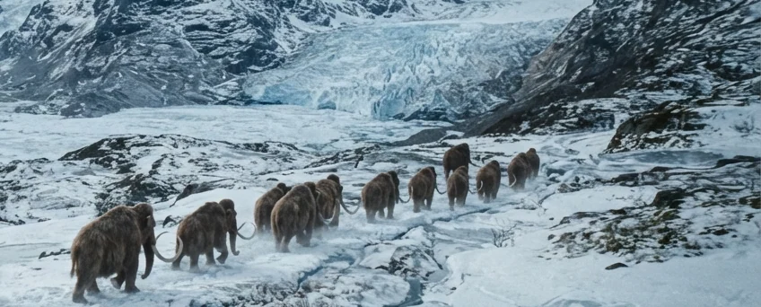

Yünlü mamut, Holosen'de ortadan kaybolan soğuğa uyumlu bir fil akrabasıydı. Bugün bazı biyoteknoloji şirketleri, yaşayan fillerde mamutla ilişkilendirilen özellikleri gen düzenleme yoluyla araştırmayı “nesli tükenen türü geri getirme” hedefiyle sunuyor. Ancak bu çalışmaların hiçbiri mamut türünü yeniden yaratmış değil; genetik benzerlik, yaşayan bir mamutun veya eski ekolojik koşulların geri döndüğü anlamına gelmiyor. Konu, antik DNA araştırmalarını koruma, hayvan refahı ve ekolojik belirsizliklerle birlikte değerlendirmeyi gerektiriyor.
Yünlü Mamut Kimdir? Filin DNA'sıyla Ortak Miras
Yünlü mamut (Mammuthus primigenius), Pleistosen boyunca Avrasya ve Kuzey Amerika'da yaşamış, günümüzdeki Asya filine yakın bir akraba olan soyu tükenmiş bir türdür. Antik genomlar akrabalık ve soğuğa uyumla ilişkili genetik değişimler hakkında bilgi verir; ancak bunlar iki türün genomlarının neredeyse aynı olduğu ya da mamutun bir fil alt türü sayılması gerektiği anlamına gelmez.
Karşılaştırmalı genomik araştırmalar, mamutlarla Asya fillerinin ortak bir evrimsel geçmişi paylaştığını ve mamutların soğuk ortamlara uyumuyla ilişkili genetik farklılıklar taşıdığını gösterir. Kürk, yağ dokusu ve hemoglobin gibi özellikler birden çok genin ve çevresel etkenin etkileşimiyle şekillenir; tek tek genleri değiştirmek, canlı bir mamutun bütün biyolojisini yeniden kurmaya yetmez.
Antik DNA araştırmaları, mamut kalıntılarından elde edilen parçalı genetik verileri yaşayan fil türlerinin genomlarıyla karşılaştırarak evrimsel farklılıkları inceler. Bu veriler, hangi genetik değişimlerin belirli özelliklerle ilişkili olabileceğini araştırmaya yardım eder; tek başına bu özelliklerin işlevini veya gen düzenlemesiyle güvenli biçimde yeniden üretilebileceğini kanıtlamaz.
"Mamut genomu, fil genomuyla yüzde 99 örtüşür; dolayısıyla araştırmacılar, mamutun dış görünüşünü ve özelliklerini kodlayan mamut genlerini Asya fili genomuna yerleştirmeyi hedefliyorlar. Ortaya çıkacak olan, yüzde birden fazla mamut geni taşımayan bir fil-mamut hibriti olacak."
Mamut Ekosistemdeki Hangi Rolü Üstlendi?
Mamutların otçul yaşamı ve büyük bedenleri, yaşadıkları alanlardaki bitki örtüsü ve besin döngüleri üzerinde etkili olmuş olabilir. “Ekosistem mühendisi” ifadesi bu olası etkileri anlatmak için kullanılır; geçmişteki mamut bozkırlarının yalnızca mamutlar sayesinde oluştuğu veya bugünkü Arktik'e aynı etkilerin taşınabileceği kesinleşmiş değildir.
Sibirya'daki Pleistosen Parkı, günümüzde yaşayan büyük otçulların çitle çevrili bir alandaki bitki örtüsü ve kar koşulları üzerindeki etkilerini inceleyen bir saha çalışmasıdır. Bu çalışma, mamutların geçmişteki ekosistem değişimlerinin tek nedeni olduğunu veya benzer bir uygulamanın geniş Arktik bölgelerinde aynı sonucu vereceğini tek başına göstermez.
Arktik'teki bitki örtüsü, kar örtüsü ve toprak sıcaklığı arasındaki ilişkiler karmaşıktır; bunların etkisi yerel koşullara göre değişir. Permafrostun çözülmesi toprakta depolanmış karbonun bir bölümünün atmosfere salınmasına yol açabilir, ancak olası salımın miktarı ve zamanlaması bölgeye ve iklim senaryosuna bağlıdır. Bu nedenle otlatmanın iklimi soğutacağı veya mamutların geri getirilmesinin karbon salımını durduracağı sonucuna varılamaz.
Nature dergisinde yayımlanan saha araştırmaları, büyük otçulların karı çiğnemesi ve bitki örtüsünü değiştirmesinin bazı alanlarda toprak sıcaklığıyla ilişkili olabileceğini göstermektedir. Bulgular belirli alan ve koşullara aittir; mamutların yeniden oluşturulmasının permafrostu koruyacağı ya da bunun yalnızca mamut benzeri hayvanlarla mümkün olduğu gösterilmiş değildir.
Mamutlar Ne Zaman ve Nasıl Yok Oldu?
Mamutların yok oluşunu tek bir nedene bağlamak mümkün değildir. Fosil dağılımı ve modellemeler, iklimin ısınmasıyla uygun yaşam alanlarının daralmasının ve insan baskısının birlikte rol oynamış olabileceğini destekler; katkıların bölgelere ve popülasyonlara göre değişmesi olasıdır.
Yünlü mamutlar farklı iklim dönemlerinde geniş bir alana yayılmış, ancak son buzul döneminin ardından ısınmayla birlikte uygun iklim koşulları daralmıştır. PLOS Biology'de yayımlanan bir modelleme çalışması, mamutlar için elverişli coğrafi alanın 42.000–6.000 yıl önce büyük ölçüde azaldığını ve kalan popülasyonların insan baskısına daha açık hâle gelmiş olabileceğini bildirmiştir; bu, bütün bölgelerin aynı tarihte yok olduğu anlamına gelmez.
İklim değişikliği tek başına yeterli bir açıklama olmayabilir; insanların yayılması ve av baskısı da olası etkenler arasındadır. Bu etkenlerin göreli önemine ilişkin kanıtlar bölgeden bölgeye değişir. Dolayısıyla iklimin popülasyonları küçülttüğü, avcılığın da her yerde “son darbeyi” vurduğu kesinleşmiş tek bir senaryo olarak sunulmamalıdır.
İnsanlarla mamutların karşılaşmasına ilişkin arkeolojik kanıtların dağılımı eşit değildir ve avcılığın etkisi tartışılmaya devam eder. Anakara popülasyonlarından sonra Wrangel Adası'nda izole bir mamut popülasyonu Holosen'in ortalarına dek yaşamıştır; bu bulgu, türün sonunun tüm coğrafyada aynı anda gelmediğini gösterir.
🕐 Mamutun Yok Oluş Zaman Çizelgesi
- 300.000 yıl önce: Yünlü mamut türü ortaya çıkıyor
- 42.000 – 12.000 yıl önce: Son Buzul Çağı'nın doruk noktası; geniş mamut stepleri hüküm sürüyor
- 14.000 – 13.200 yıl önce: Kıta popülasyonları çöküşe geçiyor
- 10.500 yıl önce: Ana kıtadaki son bireyler yok oluyor
- 4.000 yıl önce: Wrangel Adası'ndaki son izole popülasyon da kayboluyor
Neden Fil DNA'sıyla Birlikte Geri Getiriliyor?
Mamutları klonlamak, sağlam ve işlevsel hücre gerektirdiği için antik kalıntılardan elde edilen parçalı DNA ile bugün mümkün değildir. Araştırma şirketlerinin açıkladığı yaklaşım, mamut özellikleriyle ilişkilendirilen bazı genetik değişimleri yaşayan bir filin hücrelerinde incelemektir; bu yöntem, mamut genomunun veya türünün aynen geri getirildiği anlamına gelmez.
Şirketin kamuya açıkladığı araştırma planı, gen düzenleme yöntemleriyle fil hücrelerinde mamutla ilişkilendirilen bazı varyantları incelemeyi ve olası embriyo geliştirme yöntemlerini araştırmayı içeriyor. Bu, canlı bir hayvan üretildiğini veya gen düzenlemesinin güvenli ve başarılı biçimde tamamlandığını göstermez; embriyo ve taşıyıcı hayvanların sağlığına ilişkin ciddi bilimsel ve etik sorular da vardır.
Colossal, gen düzenlemesiyle elde edildiğini belirttiği tüylü fareleri bir araştırma sonucu olarak duyurmuştur. Farelerde görülen özellikler, fil embriyosunda aynı değişimlerin güvenli olacağını veya mamutun yeniden yaratıldığını kanıtlamaz; bu tür şirket duyuruları bağımsız hakemli araştırmaların yerine geçmez.
Şirketlerin açıkladığı hedef tarih ve yatırım planları, teknik başarının bağımsız doğrulaması değildir. Bugüne dek mamut türü yeniden oluşturulmuş değildir; olası bir gen düzenlenmiş fil de biyolojik ve ekolojik bakımdan yünlü mamutla eşdeğer kabul edilemez.
Amaç Ne: Neden Geri Getiriliyor?
Colossal'ın CEO'su Ben Lamm'a göre amaç "küçük bir mamut sürüsünü geri getirmek" değil; Arktik'te yüzyıllar içinde genetik çeşitliliğe sahip büyük popülasyonlar oluşturmaktır. Bu vizyon üç temel hedefe dayanıyor:
İklim değişikliğiyle mücadele: Mamut benzeri otçulların bitki örtüsünü ve kar örtüsünü değiştirerek yerel ekosistemleri etkileyebileceği öne sürülür. Bu etkinin geniş ölçekte permafrostu koruyacağı veya iklim değişikliğini yavaşlatacağı kanıtlanmış değildir; saha bulguları bugünkü koşullardaki sınırlı alanlardan gelir.
Nesli tehlike altındaki fillerle genetik alışveriş: Geliştirilen yöntemlerin fil korumasında kullanılabileceği ileri sürülüyor; ancak bu yarar henüz gösterilmiş değildir. Genetik müdahaleler, habitat kaybı ve kaçak avcılık gibi tehditleri ortadan kaldıran koruma çalışmalarının yerini tutmaz.
Biyoteknolojik sıçrama: Antik DNA ve gen düzenleme araştırmaları başka alanlarda da yöntemsel bilgi üretebilir. Bunun belirli bir ticari veya tıbbi sonuca dönüşeceği önceden garanti edilemez; olası faydalar, araştırmanın maliyeti ve hayvan refahına ilişkin risklerle birlikte değerlendirilmelidir.
"Eğer bilim insanları binlerce yıl önce yok olmuş bir canlının genomuna hâkim olabilirse, bu süreçte geliştirdikleri araçlar gelecekteki nesil yok oluşların gerçekleşmesini engelleyebilir."
Getirilmezse Ne Olur?
Permafrostun çözülmesi ve Arktik'teki ekosistem değişimleri, küresel ısınmayla bağlantılı güncel sorunlardır; bunların mamutların yokluğundan kaynaklandığı gösterilmemiştir. Permafrosttan sera gazı salımı iklim değişikliğine ek katkı sağlayabilir, ancak bu sürecin büyüklüğü ve seyri bölgesel koşullara bağlıdır.
Mamutların yok olması, geçmiş ekosistemlerdeki büyük otçul topluluklarının değişiminin bir parçasıydı. Günümüzde benzer ekolojik etkileri hangi türlerin ne ölçüde karşılayabileceği habitat ve türe göre değişir; mamutun tek ve vazgeçilmez bir “kilit taşı tür” olduğu genellenemez.
Pleistosen Parkı'ndaki çalışmalar, bazı büyük otçulların belirli alanlarda bitki örtüsü ve kar koşullarını değiştirebildiğini araştırmaktadır. Bu sonuçlar, bütün tundranın çayıra dönüştürülebileceğini ya da bu değişimin mamutlarla daha hızlı ve etkili olacağını göstermeye yetmez.
Getirilirse Ne Olur? Riskler ve Bilinmezler
Mamutun geri dönmesi senaryosu, hem heyecan verici fırsatlar hem de ciddi riskler barındırıyor. Bilimsel topluluk bu konuda iyimserler ve şüpheciler olarak belirgin biçimde ikiye ayrılmış durumda.
Ekosistem riski: Modern Arktik, mamutun yok olduğu dönemden köklü biçimde farklı bir habitattır. 4.000 yılda ekosistem ilişkileri yeniden yapılandı; mamutun yiyeceği olan otların önemli bir bölümü geriledi, onu avlayabilecek predatörler çoğunlukla ortadan kalktı. Yeniden tanıtılan hayvanlar tahmin edilemeyen biçimlerde etkileşime girebilir, yerel floraya ve faunaya zarar verebilir ya da hastalık taşıyıcısı olabilir.
Gerçek bir mamut mu, yoksa genetiği değiştirilmiş fil mi? Eleştirmenler, ortaya çıkacak organizmanın gerçek anlamda bir mamut olmayacağını belirtiyor. Büyük ölçüde fil davranışları ve sosyal yapısıyla şekillenmiş bir canlının, mamutun evrimsel işlevlerini doğada eksiksiz üstlenip üstlenemeyeceği bilinmiyor.
Nesli tehlike altındaki fillere yatırım sorunu: Asya fili tehdit altındaki bir türdür ve yaşam alanı kaybı ile insan-fauna çatışması gibi koruma sorunları sürmektedir. De-extinction araştırmalarına ayrılan kaynakların mevcut türlerin korunmasına göre önceliği, ekolojik ve etik açıdan tartışmalıdır; bu karşılaştırma bütçe ve sonuçlara ilişkin kanıtlarla yapılmalıdır.
Yasal boşluk ve etik sorunlar: Genetik olarak değiştirilmiş canlıların mülkiyet ve koruma statüsü hukukta tartışma konularıdır; soyu tükenmiş türlere benzer canlılar için tek ve evrensel bir yasal düzen bulunduğu varsayılamaz. Hayvan refahı, taşıyıcı türlerin sağlığı, ekolojik etkiler ve karar süreçlerine kimin katılacağı ayrıca ele alınmalıdır.
Yapay rahim ve üreme biyolojisi zorlukları: Fil üremesi ve gebeliği uzun zaman ölçeklerine yayılır; embriyo geliştirme, gebelik ve yavru sağlığı üzerine araştırmaların her aşaması bilimsel ve etik güçlük taşır. Laboratuvar başarısı, sağlıklı doğumu veya sürdürülebilir bir popülasyon oluşturmayı garanti etmez.
📚 Bu Yazıda Başvurulan Bilimsel Kaynaklar (2021–2026)
- Nogués-Bravo et al. (2008). Climate Change, Humans, and the Extinction of the Woolly Mammoth. PLOS Biology / PMC.
- Zimov, S.A. (2005). Pleistocene Park: Return of the Mammoth's Ecosystem. Science, 308(5723).
- Doyle, McCorristine et al. (Şubat 2026). Should we patent the 'Woolly Mammoth'? Journal of Intellectual Property Law & Practice, 21(2).
- Colossal Biosciences Wikipedia & Şubat 2026 Basın Turu (Earth.com, Mart 2026).
- NPR (4 Mart 2026). Colossal aims to bring woolly mammoths back from extinction.
- ScienceTimes (Kasım 2025). De-Extinction Breakthroughs: How Genetic Engineering Could Resurrect the Woolly Mammoth.
- Nature Scientific Reports (2021 & 2024). Effects of large herbivore grazing on relics of the presumed mammoth steppe.
- Wikipedia – Revival of the Woolly Mammoth (Mart 2026); Pleistocene Park; Pleistocene Rewilding.
- HowStuffWorks (Mart 2025). Is a Woolly Mammoth Clone Even Possible?
- ScienceInsights (Mart 2026). What Happened to the Woolly Mammoth: Extinction Explained.
2025–2026: Nerede Duruyoruz?
Bu alandaki şirket duyuruları, araştırma hedeflerini ve kendi ilerleme iddialarını bildirir; hakemli yayın ve bağımsız doğrulama olmadan bunlar bilimsel başarı olarak değerlendirilmemelidir. Bir türün yeniden oluşturulduğunu ileri sürmek için gen düzenleme denemelerinden çok daha kapsamlı kanıt gerekir.
Mamut benzeri bir hayvan üretme hedefi, türün genetik, davranışsal ve ekolojik özelliklerinin bütünüyle geri kazanılacağı anlamına gelmez. Bu nedenle şirketlerin takvim ve proje duyurularını, sonuçları doğrulanmış bilimsel bulgulardan ayrı tutmak gerekir.
Şirketler mamut benzeri bir fil üretmeye yönelik araştırma planları açıkladı; fakat bu hedefin gerçekleştiğini gösteren, bağımsız hakem değerlendirmesinden geçmiş bir sonuç bulunmamaktadır. Dolayısıyla “nerede duruyoruz?” sorusunun yanıtı, mamutun geri getirildiği değil, araştırmanın deneysel ve belirsiz aşamada olduğudur.
Sonuç: Geçmişi Diriltmek mi, Geleceği Kurtarmak mı?
Mamut araştırmaları antik DNA, evrim ve gen düzenleme hakkında bilgi üretebilir; ancak geçmişteki bir türü yeniden oluşturmak, yok oluşun nedenlerini veya bugünkü iklim krizini geri almaz. Mamutların yok oluşunda çevresel değişimlerin ve insan etkisinin payı tartışılır; bunun günümüz iklim değişikliğine doğrudan zemin hazırladığı gösterilmiş değildir.
Gen düzenlenmiş hayvanların permafrostu koruyacağı veya tehdit altındaki filler için geliştirilen araçların koruma sonuçlarını iyileştireceği henüz kanıtlanmış değildir. Olası yararlar, uzun süreli saha verileriyle ve mevcut koruma seçenekleriyle karşılaştırılarak değerlendirilmelidir.
Bilinmeyenler önemlidir: genetik olarak değiştirilmiş bir filin sağlığı ve davranışı, olası taşıyıcı hayvanların refahı ve yeni bir canlının günümüz ekosistemleriyle etkileşimi önceden kesin olarak öngörülemez. Bu sorular, olası fayda iddialarından önce araştırma ve koruma kararlarının parçası olmalıdır.
Kaynaklar: Nogués-Bravo ve diğerleri, “Climate Change, Humans, and the Extinction of the Woolly Mammoth”, PLOS Biology (2008), DOI: 10.1371/journal.pbio.0060079; IUCN Red List, Asian Elephant (Elephas maximus) tür değerlendirmesi.